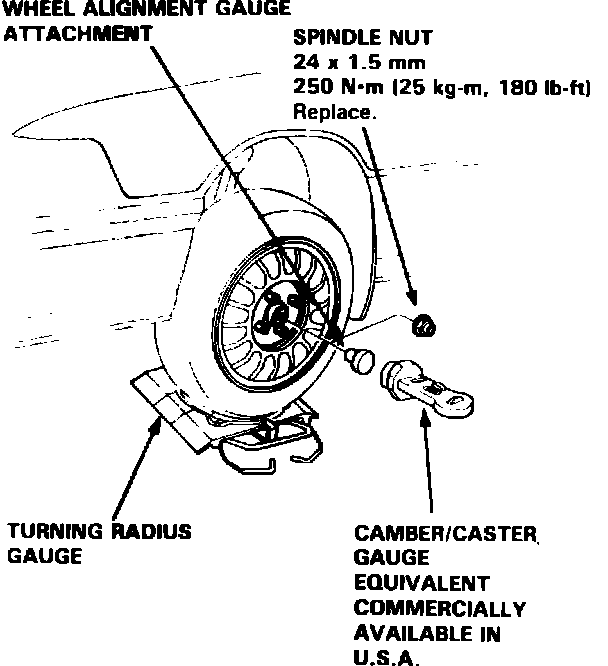

Caster
Ensure tires are properly inflated prior to checking or adjusting caster angles.
Fig. 1 Caster angle check (On Integra, torque spindle nut to 134 ft. lbs.):

Caster angle is not adjustable, however, the following procedure may be used to ensure caster is within specifications.
1. Raise front of vehicle and position turning radius gauges under front wheels, then lower vehicle.
2. Remove spindle nut and install suitable caster gauge and adapter, Fig. 1.
3. Apply front brakes and turn wheels 20° inward.
4. Position caster gauge at 0°, then return wheels to straight-ahead position and note gauge reading. If caster angle is not within specifications, inspect suspension components for damage and repair as necessary, then recheck caster.